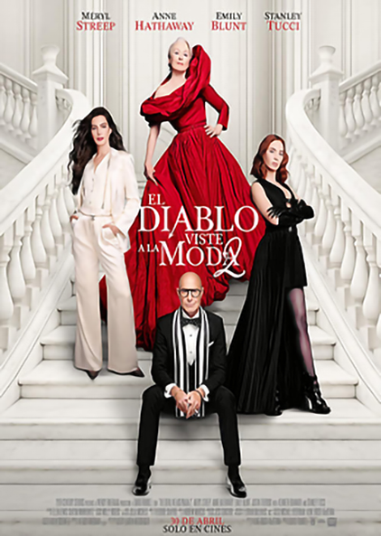

La trama sigue a Miranda Priestly en el ocaso de su carrera, enfrentando el declive de las revistas impresas y la digitalización de los medios. Para salvar su legado y mantener a flote la revista Runway, Miranda se ve obligada a reencontrarse con su exasistente, Emily Charlton. Emily ahora es una influyente ejecutiva de un poderoso grupo de lujo que maneja presupuestos publicitarios millonarios, lo que invierte la dinámica original: ahora Miranda es quien necesita el favor de Emily para sobrevivir en el nuevo ecosistema de la moda. Además, la película explora el regreso de Andy Sachs, quien tras alcanzar el éxito como periodista, vuelve a cruzarse en el camino de su antigua jefa en un escenario de alta tensión competitiva.
multiplex
cinemark
cinema